APRS for the radio you already have.
A map of who is around, a message that tells you whether it arrived, and your own beacon. In a browser or as a desktop app, on the desk or on a Raspberry Pi in the shack. Any KISS TNC on VHF. And now HF, with the Mercury modem built in.
OH2GBA>APZNEO,WIDE1-1,WIDE2-1:=6010.17N/02456.62E-NeoAPRS in Espoo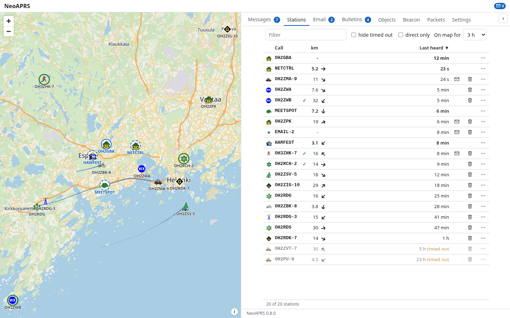
Download
One file. Python and the HF modem are inside.
| Windows | NeoAPRS-Setup.exe | Installer, no administrator rights needed. SmartScreen may warn about an unsigned installer: More info, Run anyway. |
|---|---|---|
| macOS | NeoAPRS-arm64.dmg | Apple silicon, macOS 14 or newer. Drag to Applications; the first time, right-click and Open, since the app is not signed by Apple. |
| Linux | NeoAPRS-x86_64.AppImage | Make it executable and run it. Updates itself from the update window. |
| Raspberry Pi, Debian, Ubuntu | neoaprs_<version>_arm64.deb | A service that starts with the Pi; open the page from any device in the house. amd64 for a PC. |
| Source | github.com/oh2gba/neoaprs | Python and Vue, GPL v3 or later. Releases, changelog and issues. |
Free software. No account, no advert, no tracker in the program. Nothing from the internet is ever sent on the air.
What it does
The page is the station.
Nine tabs beside the map. Everything below is on it, on a laptop, a tablet or a phone.
-
Stations
Every station heard, with distance, bearing and when it was last heard, tagged FM or HF by the radio it came on. A station's card says what it runs and where its antenna points; several cards open side by side. The row menu sends a message or an APRS query: position, status, heard direct, trace.

-
Messages
Acks, reply-acks and retries on the specification's schedule, and the delivery chain of each message, hop by hop, so you see which digipeater carried it and where it stopped. Bulletins and group messages, email through the gateway, an alert on the desktop and in the browser when something arrives.
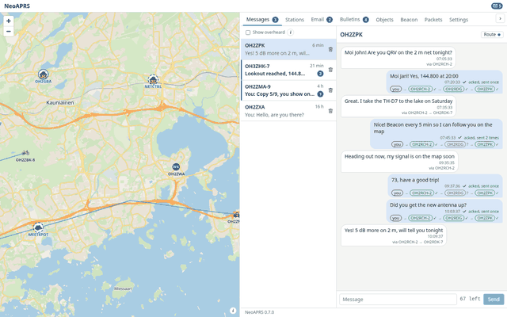
-
Weather
Readings as they come, and graphs of the last 24 hours and 7 days: temperature, pressure, wind and rain. Two stations opened together share the same scales, so a front shows as a front.

-
Nearby
Digipeaters, voice frequencies, iGates and the stations heard direct, nearest first. Pick a digipeater and its range is drawn on the map. Frequency objects, storm data and signposts are decoded, and a QRU server answers for your objects.

-
Your beacon
Position, symbol, path and status text; a change applies at once, with Undo. In a car, on a bicycle, on foot or on a boat the beacon follows a GPS by SmartBeaconing: more often on the turns, rarely on the straight. With no fix nothing is sent. Receive only is one tick.

-
Objects
Objects and items of your own, placed and moved on the map and sent on the specification's schedule: the net's meeting point, the repeater, the fox. A kill takes one off the air. Each goes out on FM, on HF or on both.

-
The packet log
Every frame as it came, with the radio it came on, the path it took and what NeoAPRS made of it. An optional fill-in digipeater and a receive-only iGate; a tick puts the stations of APRS-IS round you on the map. Nothing from the internet goes to the radio.

-
From anywhere in the house
Run it on a Raspberry Pi next to the radio and open the page on the sofa: an access key, optional https, and a layout that fits a phone. Eight languages: English, Deutsch, Español, Suomi, Français, Italiano, 日本語, Português.
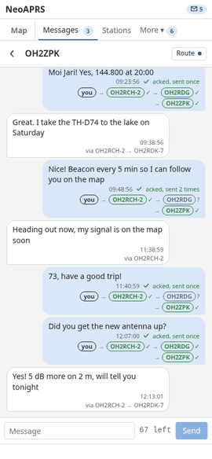


Now on HF
Two radios, one station.
The FM radio with its TNC, and an SSB radio with a sound card. Both on the same map, in the same station book, in the same conversations. Stations carry an FM or an HF tag; a message goes out on the radio the other station was heard on.
- The modem is inside
- Rhizomatica's Mercury, one pinned version, built into every download. Nothing to install, nothing to configure but the sound card and the keying, and both are picked for you. Tick HF radio and leave the type at Mercury.
- No path
- There are no digipeaters on HF: every station on the mode hears every frame, so every frame goes direct and the path controls are not shown. Distant stations are heard 1000 to 2000 km away, not nearby.
- A slow, steady channel
- A packet keys the radio for 3.8 seconds and carries 123 bytes. A message and its ack take about ten seconds. The beacon keeps your interval, 30 minutes at the least on HF, with a random pause so fixed stations do not key up together.
- Tune and Test
- Tune keys the radio with a steady 1000 Hz tone for the antenna tuner and the drive setting; Test keys it for a second so you see it go to transmit and come back. Both are in the HF radio box of the Settings tab.
- Hear it first
- The Dummy HF radio makes up six stations far away and plays your own frames through the speakers as the modem's real audio. Nothing is keyed. Try the pace of a message over HF before you wire a radio.
Where to meet
40 m7.0541 MHzUSB
The dial frequency, upper sideband; the signal sits 1.2 to 1.8 kHz above it, inside the band's digital segment. The HF radio box of the Settings tab says it too. Only stations on the same modem and the same frequency hear each other: this is not the 300 baud HF APRS network.
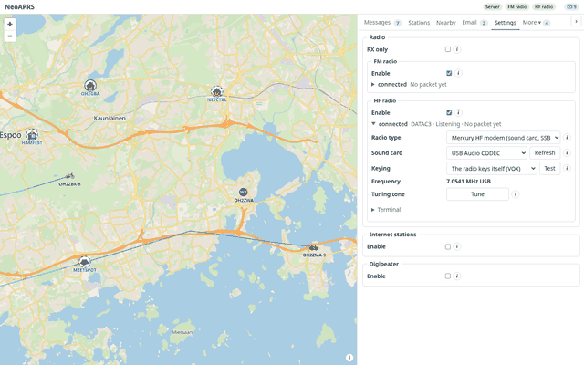
Tested against the Mercury program on one computer, not yet with two radios on the air. Nobody had sent APRS over Mercury before NeoAPRS, so the frequency is a proposal until stations confirm it on the air. Be the second station.
Radios
Any TNC that speaks KISS. Any SSB radio with a sound card.
- Kenwood TH-D7, TM-D700, TS-2000; TNC-2 clones (MFJ-1270B, 1274, 1278, TAPR)
- serial, 9600
- Kenwood TM-D710, TH-D72
- serial or USB
- Kenwood TH-D74, TH-D75
- USB or Bluetooth
- Mobilinkd TNC3, TNC4
- USB, Bluetooth or Bluetooth LE
- BTech UV-PRO, Vero VR-N76, Radioddity GA-5WB (untested)
- Bluetooth
- PicoAPRS V4 (untested)
- Bluetooth, USB-C or TCP
- LoRa APRS, CA2RXU firmware (untested)
- KISS over TCP or Bluetooth LE
- NinoTNC, TNC-Pi, TNC-X, any TNC in KISS
- USB or serial
- Kantronics KPC-3+
- RS-232
- Any radio with a sound-card interface (Digirig, SignaLink), through Direwolf
- KISS over TCP
- On HF: an SSB radio with a USB sound card or an interface (DigiRig, SignaLink, the radio's own USB audio)
- the Mercury modem inside NeoAPRS
- A GPS receiver, for a moving station
- gpsd or serial
Yaesu and Icom have no KISS TNC for a computer: use a sound-card interface and Direwolf on VHF, and the radio's own USB audio on HF. Find my radio in the setup and in Settings looks for the port. The radio guide has the setup of each and says which are tried on the air.
Install
Four steps at the first start: call, position, symbol, radio.
Windows
Run NeoAPRS-Setup.exe. A window opens with the page; NeoAPRS sits in the tray and tells you itself when there is a newer version, with Update now.
macOS
Open the disk image and drag NeoAPRS to Applications. The first time, right-click it and choose Open. macOS asks once whether NeoAPRS may use the microphone: that is the radio's sound card, for HF.
Linux
$ chmod +x NeoAPRS-*-x86_64.AppImage && ./NeoAPRS-*-x86_64.AppImageThe AppImage is the app; it updates itself from the update window.
Raspberry Pi, Debian, Ubuntu
$ sudo apt install ./neoaprs_*.deb && neoaprs service install --lingerA user service that starts with the Pi. Open the page from any device in the house with the access key the setup shows.
No radio at hand? The radio type Dummy makes up VHF traffic to try the page with, and the Dummy HF radio makes up distant stations and plays the modem through the speakers. The manual has the rest.
Screenshots
Light and dark, desk and phone.

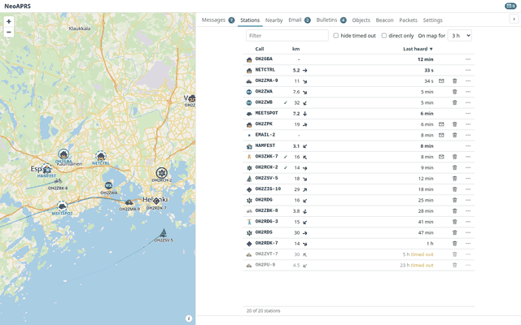
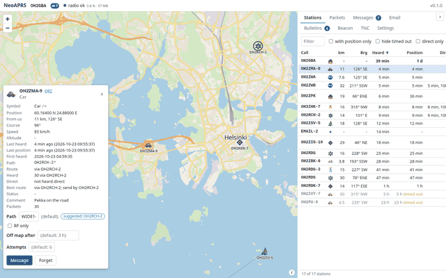
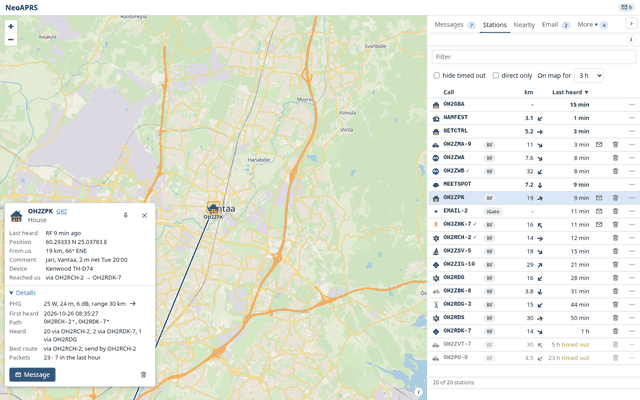
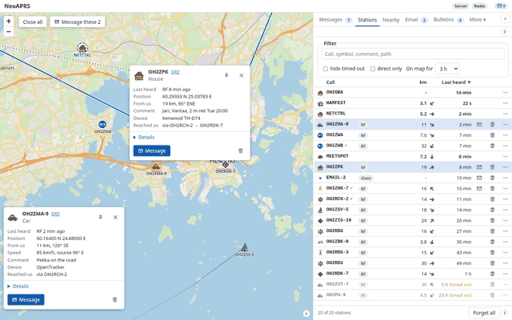

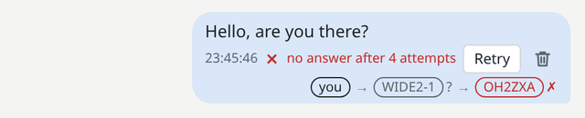
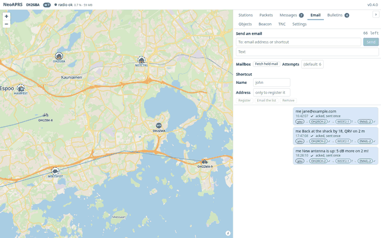
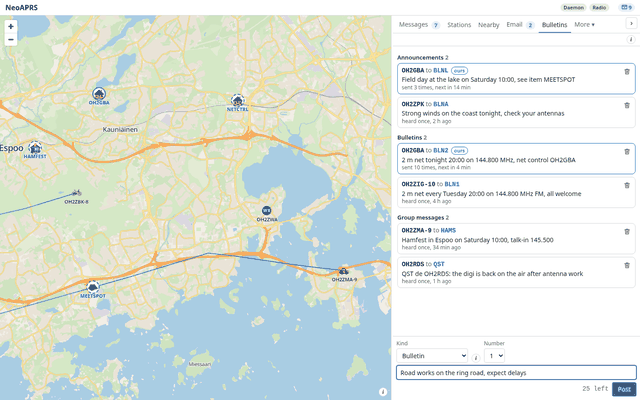
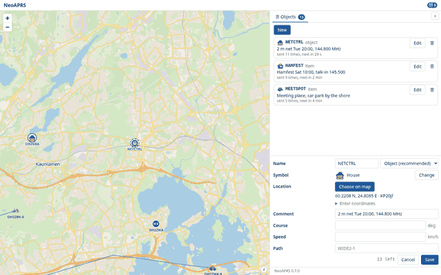
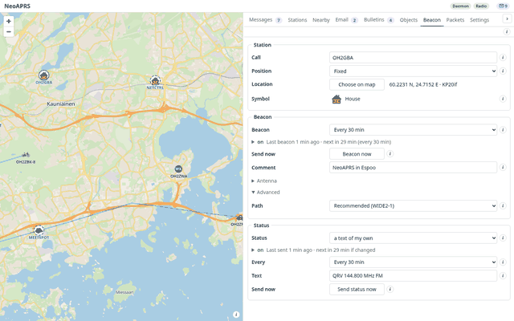
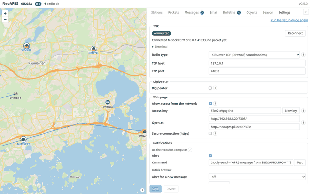
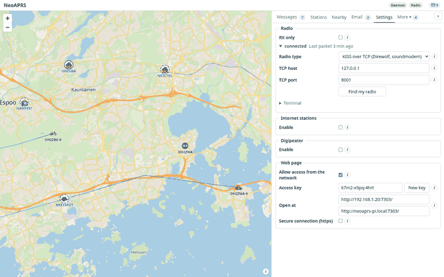
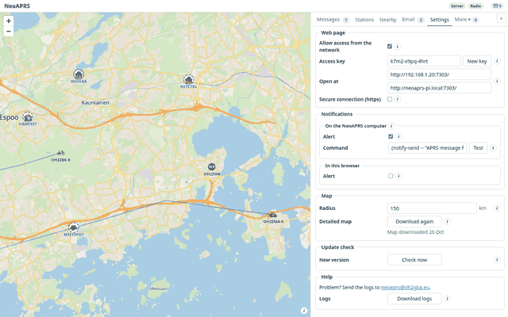
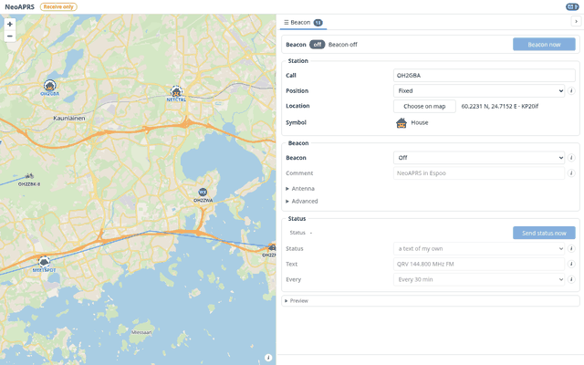
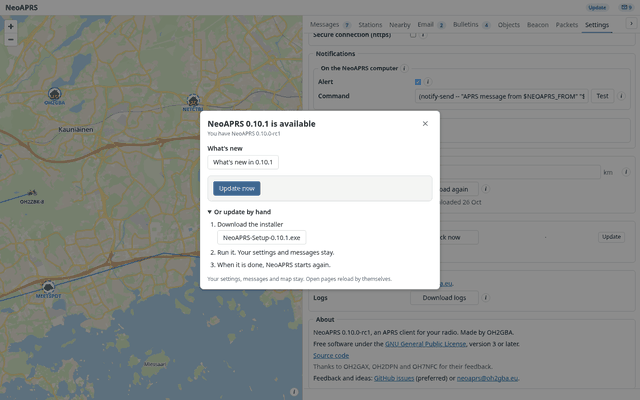
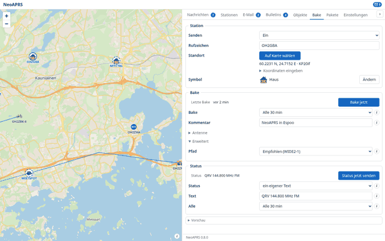
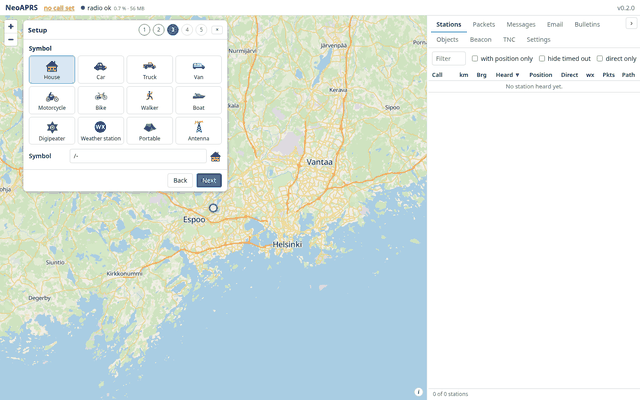
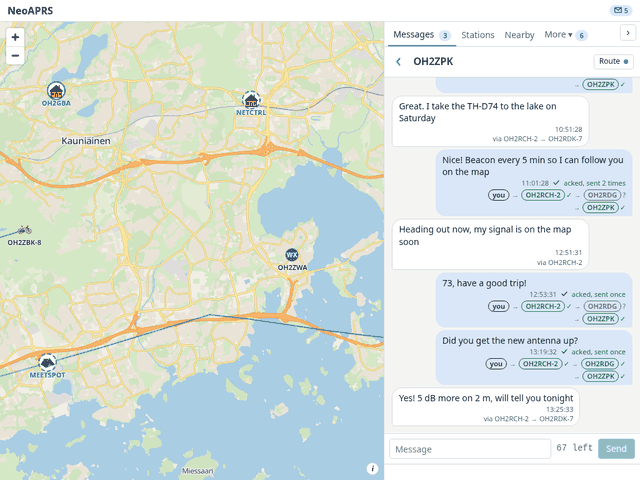

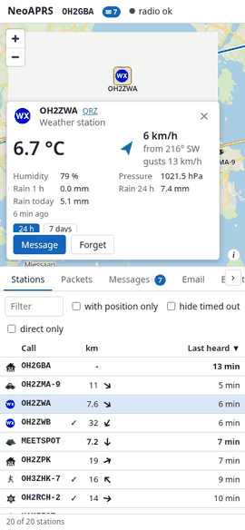
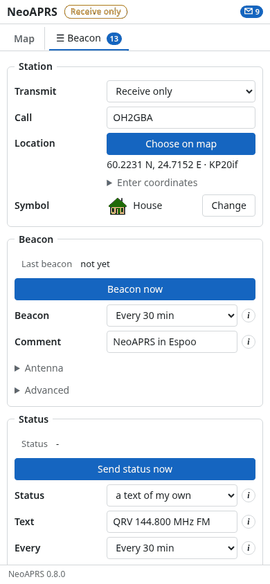
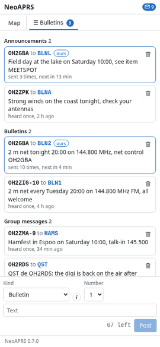


A made-up day on the air: apart from a few digipeaters of the sample capture, the calls are invented.